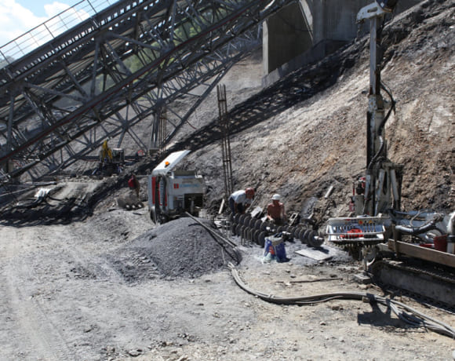
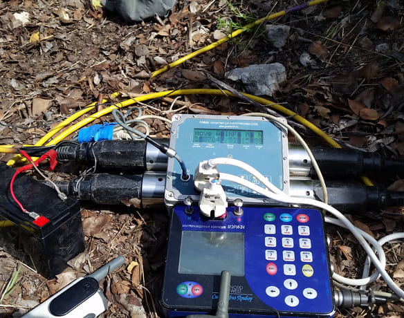
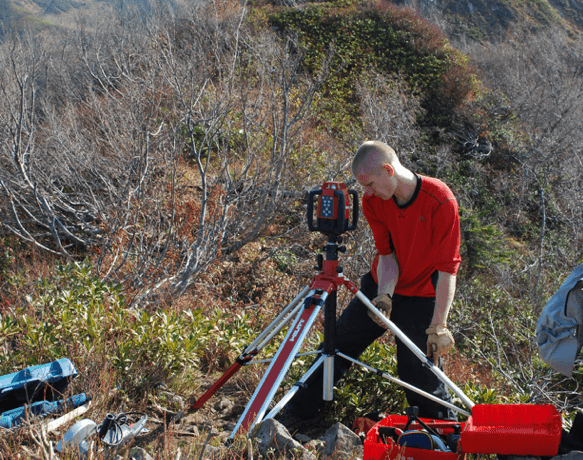
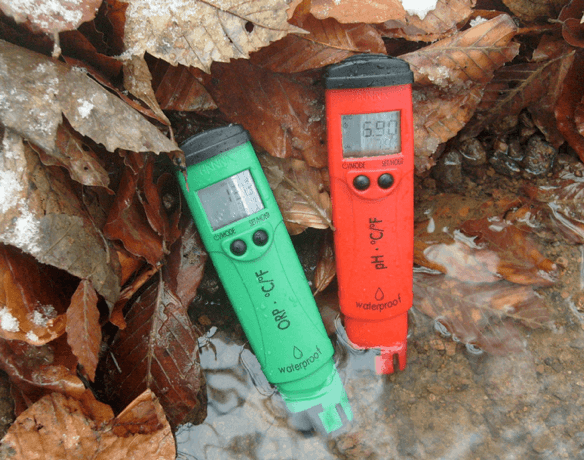
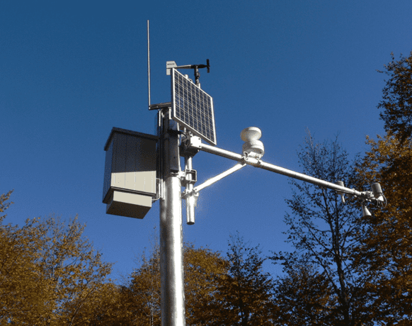
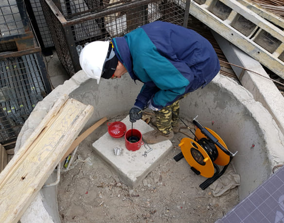

Инженерные изыскания
Комплексные инженерные изыскания включают в себя целый спектр работ и исследований обеспечивающих максимально полный анализ грунтового массива. Наше изыскательское подразделение имеет в своем распоряжении парк разнообразного бурового и изыскательского оборудования.

Инженерно-геологические изыскания
ОСНОВНЫЕ ВИДЫ РАБОТ
- инженерно-геологическая съемка;
- лабораторные исследования физико-механических свойств грунтов и химических свойств проб подземных вод;
- испытания эталонных и натурных свай;
- изучение опасных геологических и инженерно-геологических процессов;
- физическое и математическое моделирование взаимодействия зданий и сооружений с геологической средой;
- геотехнический контроль строительства.
ПРОГРАММНОЕ ОБЕСПЕЧЕНИЕ
GeoSlope
Geonics
AutoCAD
GeoExplorer
GeoDraw
SisGeo

Инженерно-геофизические иисследования
ОСНОВНЫЕ ВИДЫ РАБОТ
- сейсморазведка (МПВ, КМПВ, ОГТ, сейсмическая томография);
- электроразведка (ВЭЗ, ВЭЗ в варианте электротомографии, ЕП, ЭП, ВЭЗ-ВП);
- георадиолокация;
- геофизический мониторинг (анализ и изучение динамики современных инженерно-геологических процессов).
ПРОГРАММНОЕ ОБЕСПЕЧЕНИЕ
RadExPro
ZondRes2D
GeoScan32
IPI2WIN

Инженерно-геодезические изыскания
ОСНОВНЫЕ ВИДЫ РАБОТ
- создание геодезических сетей сгущения;
- топографические съемки М 1:500 - 1:2000;
- батиметрическая съемка акваторий водоемов;
- аэрофотосъемка;
- определение возможных деформаций в конструкциях строящихся и эксплуатируемых зданий и сооружений;
- анализ и прогноз развития деформационных процессов;
- рекомендации по профилактическим и восстановительным работам;
- геодезическое сопровождение объектов строительства.
ПРОГРАММНОЕ ОБЕСПЕЧЕНИЕ
PhotoScan
Geonics
CREDO_Professional
Javad GNSS Justin

Инженерно-экологические изыскания
ОСНОВНЫЕ ВИДЫ РАБОТ
- инженерно-экологические изыскания;
- сбор и обработка фондовых материалов;
- рекогносцировочное обследование территории;
- исследование и оценка радиационной обстановки;
- почвенные исследования;
- гидрохимические исследования;
- исследование вредных физических воздействий (уровень шума, вибрация, электромагнитное поле);
- исследования растительного покрова;
- исследования животного мира.
ПРОГРАММНОЕ ОБЕСПЕЧЕНИЕ
ПДВ-ЭКОЛОГ
ЭКОЛОГ-Шум
УПРЗА «Эколог»

Инженерно-гидрометеорологические изыскания
ОСНОВНЫЕ ВИДЫ РАБОТ
- гидрографические работы на реках и морях;
- метеорологические наблюдения;
- изучение гидрологического режима водных объектов;
- изучение и прогноз опасных гидрометеорологических процессов и явлений с расчетами их характеристик;
- изучение русловых процессов водных объектов, деформаций и переработки берегов;
- исследование ледового режима водных объектов;
- гидрометеорологический мониторинг.
ПРОГРАММНОЕ ОБЕСПЕЧЕНИЕ
ArcGis
ArcMap
ArcCAD
Adobe Acrobat

Мониторинг
ОСНОВНЫЕ ВИДЫ РАБОТ
- инструментальный геодезический контроль;
- инклинометрические измерения в скважинах;
- гидрогеологические наблюдения в режимных скважинах, оборудованных пьезометрами;
- геофизические методы (сейсморазведочные работы методом КМПВ и электроразведочные работы методом электротомографии);
- маршрутно-визуальное обследование территории;
- дешифрирование аэро- и космоснимков;
- анализ бюллетеней сейсмических, геодинамических и техногенных событий.